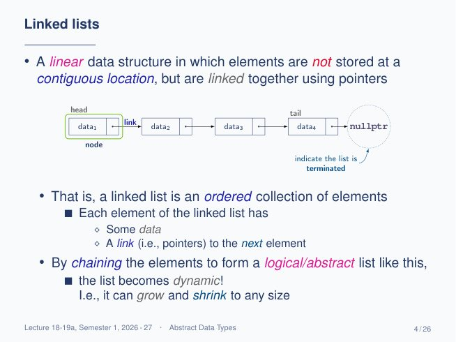
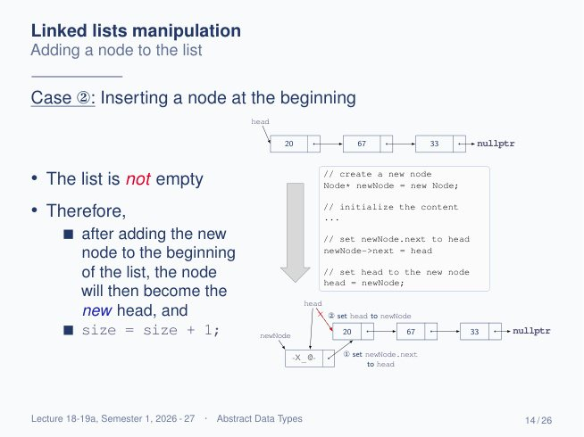
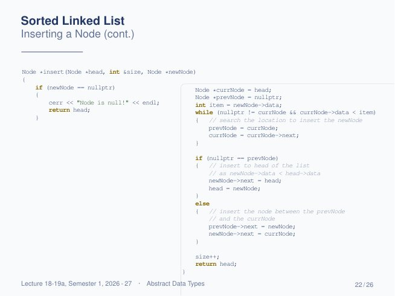
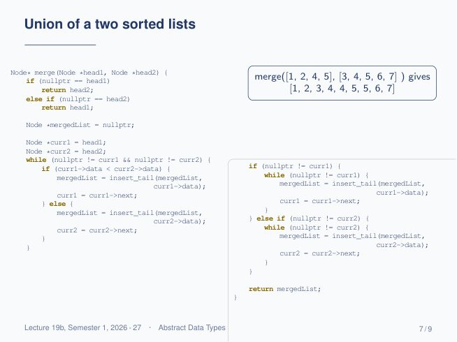

SOE105 · 第 15 章
链表与简单算法
Linked Lists & Simple Algorithms
虚线下划线为术语；悬停查看中文、英文与释义，完整词典见“术语”。
本章目录
本章把“列表”从数组换成由指针串起来的节点：先看数组当列表的局限，再建立 node 与 head 的结构，逐个实现遍历、插入、删除、搜索，最后用 length、palindrome、merge 三个算法收束，并说明 prev/curr 这对指针的通用套路与尾插的代价。
本章要点
- 静态数组必须事先决定长度；动态数组只能在运行时按指定大小分配一整块连续空间。
- 链表的元素不连续存放，每个节点存 data 与指向下一个节点的 next，最后一个节点的 next 是 nullptr。
- head 指向首节点；空表时 head == nullptr，所以遍历的终止条件永远是 currNode != nullptr。
- 把 head 传进函数时，只读操作用传值就够；会改动表头的插入/删除必须传引用或返回新的 head。
- 头插两步：newNode->next = head; head = newNode; 顺序不能反。
- 尾插必须先从 head 走到尾；讲义指出可以加一个 tail 指针省掉这趟遍历。
- 有序表的插入与删除都靠 prevNode/currNode 定位，删除还要把节点从链上摘下并 delete。
- length、palindrome、merge 都建立在同一套遍历、头插、尾插之上。
15.1 数组当列表的局限
讲义开场先肯定列表的用途：列表是装一组数据的有用结构。目前课程里用数组来实现列表，例子是 10 个学生的成绩 int studentMarks[10];，以及最近两周的气温 double temperature[14];。
静态数组的局限很直接：int myArray[10]; 这样的写法要求我们在写程序时就决定数组（也就是列表）的大小。动态数组把这件事推后了一点——先用 cin >> n; 读入 n，再 myArray = new int[n];——但讲义给的评语仍然是“limitation”：它只能在程序运行时按指定的大小分配一块数组。
两种数组的共同点是“一整块连续空间，长度一次定死”。链表换了一条路：元素不存放在连续位置，而是用指针链接起来。讲义由此给出链表的关键性质——列表变成动态的，可以增长和缩小到任意大小。
| 维度 | 静态数组 | 动态数组 | 链表 |
|---|---|---|---|
| 大小何时确定 | 写程序时 | 运行时 new 的那一刻 | 随节点的增加与删除而变 |
| 存储位置 | 一整块连续空间 | 一整块连续空间 | 节点分散，靠指针相连 |
| 讲义评语 | 必须事先决定大小 | 只能在运行时按指定大小分配 | 可以增长和缩小到任意大小 |
L18–19a p.1–2
15.2 node、head 与 nullptr
讲义给链表linked list的定义是：一种线性数据结构，元素不存放在连续位置，而是用指针链接在一起。每个元素称为一个节点node，节点里有两样东西——一些数据（data），以及一个指向下一个元素的链接（link，也就是指针）。
一张图能把这套术语说清：head 指向第一个节点，节点之间用 link 相连，最后一个节点的 link 是 nullptr，表示列表到此结束；tail 指向最后一个节点。讲义强调，正是这种“把元素串成一条逻辑上的列表”的做法，让列表变成动态的。

Clean vector diagram of a singly linked list: four rectangular nodes in a row, each split into a data field and a link field, data values 20, 25, 67, 63; a head pointer arrow into the first node, a tail pointer arrow into the last node, and the last node's link drawn as a crossed diagonal ending in the label nullptr; a bracket under one node labelled node. Flat 2D, thin 1.5 px strokes, muted slate blue and warm grey palette, white background, English labels, no cartoon, no gradient, no shadow.
节点本身是一个结构体，成员是指向自身类型的指针。讲义把定义放在 node.h 里，并用 typedef 给 Node* 起了个短名字 NodePtr：
// File: node.h
struct Node {
int data; // the data stored in the node
Node *next; // link to the next node
};
typedef Node *NodePtr; // shortcut to Node pointer (optional)在主程序里创建一个节点分三步：分配内存、初始化数据、把 next 置为 nullptr。讲义还演示了如何判断终止，以及如何释放节点：
Node *node; // or: NodePtr node;
node = new Node; // ① allocate memory
node->data = 0; // ② initialize the data
node->next = nullptr; // ③ set the next pointer to nullptr
if (node->next == nullptr) {
// node is the terminal node
}
delete node; // release the node访问节点成员有两种写法：(*p).data 与 (*p).next，或者 p->data 与 p->next。这与第 14 章指向结构体的指针完全一致——node 是指针，所以用箭头。
表示整条链表只需要一个指针：NodePtr head;，让它指向第一个节点。讲义给了一条关键约定：当链表为空时，head 是 nullptr。于是“空表”与“非空表”的区分，就是 head 是否为 nullptr。
L18–19a p.5–10
15.3 把链表传给函数：head 的麻烦
讲义先给了一条乐观的结论：把链表传给函数时，传 head 的值就够——从第一个节点出发，沿 next 可以走到每一个节点。
但紧接着它指出问题：如果函数改动了链表的开头——在头部插入一个节点，或者删掉头节点——那么 head 就不再指向链表的开头了。函数里改的是形参那份副本，调用者的 head 还停在原来的位置，新头节点从此无人指向。
讲义给了两个解法：① 传 head 时始终按引用传；② 让函数返回一个新的指针值，由调用者接住。本章后面的代码采用的是第二种——insert、remove、insert_end 都写成返回 Node*，最后 return head;：
void print(Node *head); // read only: value is enough
Node *insert(Node *head, int &size, Node *newNode); // may change the head: return it
// alternative: pass the head pointer by reference
void insert(Node *&head, int &size, Node *newNode);两种解法对应两种签名。print 只读不改，传值最省事；insert 可能改动表头，要么把 head 的引用交出去（Node *&head），要么把新的 head 作为返回值带回来。
L18–19a p.11
15.4 遍历：打印与搜索
显示一条链表，就是沿着节点一个个走、把 data 打印出来。讲义把遍历traversal写成三步：创建一个 currNode 并让它等于 head；显示 currNode 的 data；令 currNode = currNode->next;，重复前两步直到表尾。
void print(Node *head) {
if (nullptr == head) {
cout << "The list is empty!" << endl;
return;
}
// traverse the list
Node *currNode = head;
while (nullptr != currNode) {
cout << currNode->data << " ";
currNode = currNode->next;
}
cout << endl;
}函数开头先把空表单独处理掉，后面就可以放心地进入循环。循环条件是 nullptr != currNode，循环体最后一行把 currNode 推到下一个节点。讲义在这一页的页脚注明：nullptr is the same as NULL——两种写法等价，本章代码里会交替出现。
搜索用的是同一套骨架，只是把“打印”换成“比较”。找到就立刻返回该节点的指针；走完整条表还没有匹配，就用 cerr 报错并返回 nullptr：
Node *search(Node *head, int item) {
Node *currNode = head;
while (nullptr != currNode) {
if (item == currNode->data)
return currNode;
currNode = currNode->next;
}
cerr << "item \"" << item << "\" not found!" << endl;
return nullptr;
}注意返回值的语义：搜索返回的是节点指针，不是下标。链表没有下标可用，调用者拿到指针后既可以读 data，也可以继续沿 next 走。判断“找没找到”，看返回值是否为 nullptr。
L18–19a p.18–20
15.5 插入：空表、头插、尾插
讲义把“加一个节点”拆成三种情形：表为空时加；加在表头；加在表中间。此外，它还在 More Operations 一节单独讲追加到表尾。为了讨论方便，它约定用一个变量 size 记录节点个数，每次插入后 size 加一。
情形①，空表。此时 head 是 nullptr、size 是 0；新节点接上之后，它自己就是表头：
Node *newNode = new Node;
newNode->data = 20;
newNode->next = nullptr;
head = newNode;
size = size + 1;情形②，表非空，插入到开头。新节点要成为新的 head，所以先把原来的整条表挂到它后面，再移动 head：
Node *newNode = new Node;
// initialize the content ...
newNode->next = head; // ① set newNode.next to head
head = newNode; // ② set head to newNode
size = size + 1;这两行的顺序是这一节的重点。讲义在图上用 ① ② 标出正确顺序，并把相反的顺序打了叉：如果先写 head = newNode，原来的表头地址就被覆盖了，整条旧链表再也找不到。
尾插（append），追加到表尾。讲义把难点说得很清楚：关键在于如何定位最后一个元素（tail）。做法是从 head 出发，只要当前节点的 next 还不是 nullptr 就继续走；走到 next 为 nullptr 的节点，它就是尾节点：
Node *insert_end(Node *head, int &size, Node *newNode) {
if (newNode == nullptr) {
cerr << "Node is null!" << endl;
return head;
}
if (nullptr == head) {
head = newNode; // the list was empty
} else {
Node *currNode = head;
while (nullptr != currNode->next) {
currNode = currNode->next;
}
currNode->next = newNode;
}
size++;
return head;
}空表的分支不能省：如果照搬 else 里的遍历，currNode 一进来就是 nullptr，while 条件立刻要读 currNode->next，程序崩掉。另外，newNode 的 next 必须事先是 nullptr（创建节点时就设好），否则接在表尾的节点后面还挂着一段来路不明的链。
| 情形 | 要改的指针 | 最容易错的地方 |
|---|---|---|
| 空表 | head = newNode | 忘记把 newNode->next 置为 nullptr |
| 头插 | newNode->next = head; head = newNode | 先改 head，丢掉原表头 |
| 尾插（非空） | 尾节点->next = newNode | 不先走到尾，或漏掉空表分支 |

L18–19a p.14–16、p.21–22
15.6 删除头节点
删除头节点比插入多一步：除了移动 head，还要把旧头节点还给系统。讲义先检查表是否为空，非空时执行四行：
if (head != NULL) {
Node *currNode = head; // ① remember the old head
head = head->next; // ② move head to its next node
currNode->next = NULL; // ③ cut the link
delete currNode; // ④ release the node
}四步各有作用：currNode 先记住要删的那个节点；head 后移，让链表的入口变成第二个节点；把 currNode 的 next 置空，让它彻底脱离链表；最后 delete 释放内存。删除之后还要把 size 减一。
顺序同样是重点。head = head->next; 必须在 delete currNode; 之前——先删再取 next，读的就是已经归还给系统的那块内存。反过来，先移动 head 再 delete，currNode 仍然指着旧头节点，删除是安全的。
L18–19a p.17
15.7 有序链表：插入与删除
有序链表的操作多了一个前提：整条表按 data 从小到大排好。于是插入新节点分两步——先找到它该待的位置，再把它接进去。讲义把位置描述成一对指针：找到 prevNode 与 currNode，使得新节点应该插在这两个节点之间。
有序插入sorted insertion的连接动作只有两句：newNode->next = currNode; 与 prevNode->next = newNode;。第一句让新节点接住后半段，第二句让前驱接住新节点。讲义在图上把这两步标成 ① ②（先接后继、再接前驱），并给相反顺序打了叉；而下面这段代码把 prevNode->next = newNode; 写在前面。两种顺序在这里都能得到正确的链，因为 currNode 已经保存在变量里，不会丢；按图先接后继的好处是任何时刻后半段都有指针指着，改写过程中更不容易丢节点。
Node *insert(Node *head, int &size, Node *newNode) {
if (newNode == nullptr) {
cerr << "Node is null!" << endl;
return head;
}
Node *currNode = head;
Node *prevNode = nullptr;
int item = newNode->data;
while (nullptr != currNode && currNode->data < item) {
// search the location to insert the newNode
prevNode = currNode;
currNode = currNode->next;
}
if (nullptr == prevNode) {
// insert to head of the list
// as newNode->data < head->data
newNode->next = head;
head = newNode;
} else {
// insert the node between the prevNode and the currNode
prevNode->next = newNode;
newNode->next = currNode;
}
size++;
return head;
}循环条件里有两个条件，缺一不可：currNode != nullptr 保证不会走过表尾，currNode->data < item 保证停在该停的位置。循环结束时，currNode 是第一个不小于 item 的节点（或者 nullptr），prevNode 是它的前驱。如果 prevNode 仍是 nullptr，说明新节点比所有节点都小，要插在表头——这个分支必须单独处理，因为此时没有“前驱”可以让 next 指向新节点。
删除走的是同一套定位逻辑。讲义把步骤写成三条：定位（currNode 指向要删的节点，prevNode 指向它的前驱）；断开（prevNode->next = currNode->next; 再 currNode->next = nullptr;）；释放（delete currNode;）。
Node *remove(Node *head, int &size, const int value) {
if (nullptr == head) {
cerr << "List is empty!" << endl;
return head;
}
Node *currNode = head;
Node *prevNode = nullptr;
while (nullptr != currNode && currNode->data < value) {
prevNode = currNode;
currNode = currNode->next;
}
if (nullptr == currNode || value != currNode->data) {
cerr << "Remove error: \"" << value << "\" not in the list" << endl;
return head;
} else {
if (head == currNode)
head = head->next;
else
prevNode->next = currNode->next;
}
currNode->next = nullptr;
size--;
delete currNode;
return head;
}这段代码有两处判断值得单独记。第一处是“没找到”：currNode 走成 nullptr，或者停在了一个 data 不等于 value 的节点上（说明表里根本没有这个值），两种情况都报错返回。第二处是“删的是不是头节点”：如果是，改 head；否则改 prevNode->next。两条路都必须把 currNode 从链上摘下来，否则 delete 之后它仍然挂在表里，成为悬空节点。
讲义最后把定位这一段单独抽出来当模板：currNode 从 head 出发，prevNode 从 nullptr 出发，只要 currNode 非空且它的 data 还小于目标值，就一起前进一步。它把这称为插入、删除、搜索共用的“常见代码段”，并提醒循环还要加“其它继续条件”——具体加什么，取决于你是要找插入点、删除点，还是判断值是否存在。
| 步骤 | 插入 | 删除 |
|---|---|---|
| 定位终点 | currNode 是第一个 data ≥ 新值的节点 | currNode 是 data 等于目标值的节点 |
| 特殊情况 | prevNode == nullptr：插在表头 | currNode == head：改 head |
| 改指针 | 新节点接 currNode，前驱接新节点 | 前驱绕过 currNode，currNode->next 置空 |
| 收尾 | size++，返回 head | size--，delete，返回 head |

L18–19a p.24–28
15.8 简单算法：length 与 palindrome
讲义在最后一部分换了问法：除了“创建可变大小的数组”，链表还能用来解决什么问题？它给了三个算法任务——求长度、判断回文、求两个有序链表的并。这三个算法都以本章的遍历与插入为零件。
求长度最直接：从 head 走到 tail，数经过了多少个节点。迭代版用一个 size 计数器；递归版则把“长度”写成递推——空表为 0，否则是 1 加上“去掉头节点之后那条表”的长度：
int length(Node *head) {
Node *currNode = head;
int size = 0;
while (nullptr != currNode) {
size++;
currNode = currNode->next;
}
return size;
}
int length_recursive(Node *head) {
if (nullptr == head)
return 0;
return 1 + length_recursive(head->next);
}递归版正好呼应第 10 章：终止条件是空表，终止返回值是 0，递归调用把参数换成了 head->next，每次都朝“更短的表”靠近。
回文的定义是正着读与倒着读相同的词、数、短语或符号序列。讲义给了两个例子：[a b c d d c b a] 是回文，[a b c d e] 不是。它的算法分三步：head 为 nullptr 时直接返回 false；按相反顺序新建一条表 newList；逐节点比较 head 与 newList 是否相同。
bool isPalindrome(Node *head) {
// return false immediately if the list is empty
if (nullptr == head)
return false;
Node *currNode = head;
Node *reverseList = nullptr;
// create the inverted list
while (nullptr != currNode) {
reverseList = insert_head(reverseList, currNode->data);
currNode = currNode->next;
}
// check if the two lists are the same
currNode = head;
Node *reverseListHead = reverseList;
bool result = true; // assume true
while (nullptr != currNode) {
if (currNode->data != reverseListHead->data) {
result = false;
break;
}
currNode = currNode->next;
reverseListHead = reverseListHead->next;
}
// free the memory of the inverted list
deleteList(reverseList);
return result;
}关键在反向表的构造：每读一个节点，就用“头插”把它塞到 reverseList 的最前面。原表读的是正序，头插之后新表正好是倒序，于是“正着读”与“倒着读”变成了两条同向链表的逐节点比较。比较用两个指针同步前进，一旦某对 data 不同就把 result 置 false 并 break；比较结束后必须调用 deleteList 把反向表释放掉，否则每判断一次就泄漏一条表。
讲义这一页只调用了 insert_head 与 deleteList，没有给出它们的函数体：insert_head 就是 15.5 的头插（把新值接到表头并返回新的 head），deleteList 则是把整条表逐个节点释放的辅助函数。
L19b p.4–7
15.9 merge、尾插的代价与常见错误
第三个算法是求两个有序整数链表的并（讲义标题写 union，函数名是 merge）：merge([1, 2, 4, 5], [3, 4, 5, 6, 7]) 得到 [1, 2, 3, 4, 4, 5, 5, 6, 7]。注意结果保留了重复的 4 与 5——合并的是两条有序表，不是集合运算。
Node* merge(Node *head1, Node *head2) {
if (nullptr == head1)
return head2;
else if (nullptr == head2)
return head1;
Node *mergedList = nullptr;
Node *curr1 = head1;
Node *curr2 = head2;
while (nullptr != curr1 && nullptr != curr2) {
if (curr1->data < curr2->data) {
mergedList = insert_tail(mergedList, curr1->data);
curr1 = curr1->next;
} else {
mergedList = insert_tail(mergedList, curr2->data);
curr2 = curr2->next;
}
}
if (nullptr != curr1) {
while (nullptr != curr1) {
mergedList = insert_tail(mergedList, curr1->data);
curr1 = curr1->next;
}
} else if (nullptr != curr2) {
while (nullptr != curr2) {
mergedList = insert_tail(mergedList, curr2->data);
curr2 = curr2->next;
}
}
return mergedList;
}两个指针各走一条表，每次把较小的当前值尾插进结果表，并让对应指针前进一步；一条走完后，另一个 while 把剩下的节点依次尾插。开头的两个 if 处理“有一条表为空”的边界，直接返回另一条。
讲义在这里点出了代价问题。insert_tail 的实现如下：它从 head 一路走到尾，再把新节点接上——也就是说，每往表尾加一个节点，都要完整遍历一次链表。
Node *insert_tail(Node *head, int value) {
Node *newNode = getNewNode(value);
Node *currNode = head;
Node *prevNode = nullptr;
while (nullptr != currNode) {
prevNode = currNode;
currNode = currNode->next;
}
if (nullptr == prevNode) {
return newNode; // the list was empty
} else {
prevNode->next = newNode;
}
return head;
}讲义的评语是：每次往尾部加节点都得遍历整条表！解决办法是再加一个指向表尾的指针 tail，用它直接定位最后一个节点，从而加快这个过程。
| 操作 | 是否需要遍历 | 原因 |
|---|---|---|
| 头插 | 不需要 | 只改 newNode->next 与 head 两处 |
| 删除头节点 | 不需要 | head 本身就是入口 |
| 尾插 | 需要 | 必须从 head 走到 next 为 nullptr 的节点 |
| 有序插入 / 删除 | 需要 | 要先找到 prevNode 与 currNode |
| 搜索 / 求长度 / 打印 | 需要 | 只能沿 next 逐个访问 |
讲义没有使用 O() 记法，这里只按“要不要走一遍”比较：头部动作最便宜，尾部或中间都要先付一趟遍历；维护 tail 指针，就是用一点额外存储换掉尾插的这趟遍历。
| 错误 | 后果 | 正确做法 |
|---|---|---|
| 头插时先改 head | 原链表丢失 | 先 newNode->next = head |
| 空表没单独处理 | 解引用空指针 | 先判断 head == nullptr |
| 先 delete 再读 currNode->next | 读到已释放的内存 | 先移 head / 改前驱，再 delete |
| 新节点 next 未置 nullptr | 表尾挂上垃圾链 | 创建时立刻置 nullptr |
| 函数按值接收 head 又改表头 | 调用者的 head 没更新 | 传 Node*& 或返回新 head |
| 只移动 head 不 delete | 内存泄漏 | 摘链后 delete 并 size-- |

L19b p.8–9、L18–19a p.21–22